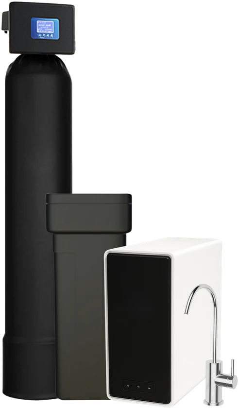

Most Popular
Complete Home System
Whole-home softening and carbon filtration paired with the HW800 AlkaPro tankless RO — treated water at every tap, plus reverse osmosis at the kitchen sink.
Free quote
Learn more